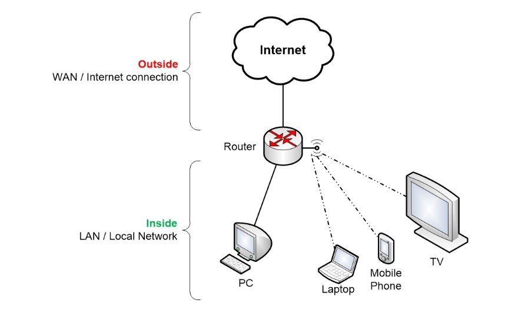
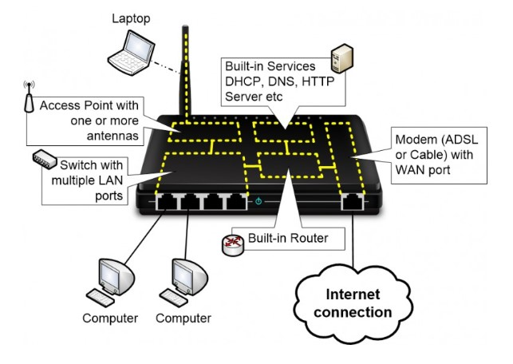
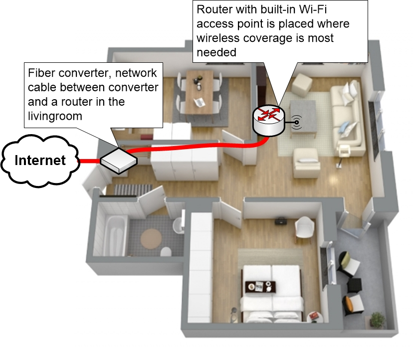
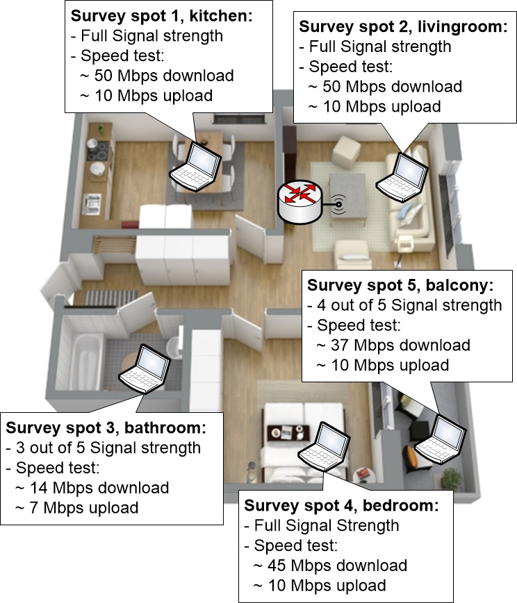

Introduction to Home Networks
A typical home network includes various devices, with routers playing a central role by connecting to the internet and sharing this connection locally.

A closer look at the Home Router
Most people refer to their Home Router simply as a "router." However, the term "router" can be somewhat misleading because a Home Router is actually made up of multiple components combined into one device, with the routing function being just one of them.
Nowadays, the majority of Home Routers on the market also include built-in Wi-Fi access points, and they are often marketed as Wi-Fi Routers.
In this guide, we'll explore the various components of a typical Home Router in detail. The information will be presented across several sections. Understanding what a Home Router really is and how it functions will enhance your knowledge and use of the device.
Components in a Home Router
These are the main components of a typical Home Router:
- An integrated Switch with a number of LAN ports. The LAN ports let you connect computers and other devices using network cables
- A Wireless Access Point with one or more antennas which wireless devices can connect to. The antennas can either be visible external antennas, or they can be integrated inside of the home router.
- Often there is a built-in Modem, at least if the Home Router is meant to be connected to Cable or DSL-based Internet connections.
- The WAN port of the router lets you connect your internet connection to the home router. If the home router has a modem, then the WAN port is connected to the internal modem.
- The actual Router function which forwards traffic between the inside and outside networks.

Home Router components and network traffic
The internal Router only has be involved if the Network traffic is going to the internet, or if the computers need to talk with one of the Services that are running on the Home Router.
Each of the internal components will be discussed in more details later on in the guide.
Routing, introduction to IP addresses
The primary function of a Router is to direct data traffic to its intended destination. This requires the router to maintain an understanding of the network's layout and where different destinations are located. Upon receiving data, the router aims to send this data in the direction of its destination.
In the context of a home environment, a router usually handles relatively straightforward routing tasks. Typically, it doesn't have many choices for directing traffic. It is aware of the existence of a single local LAN (Local Area Network) within the router. Consequently, it assumes that any destination not within this local LAN is located on the external internet. Therefore, unless the data is specifically addressed to a device within the local LAN, the router will direct the traffic to the internet.
When two computers within the same local area network (LAN) communicate, the home router simply facilitates the direct exchange of data between them. However, if a computer on the LAN attempts to access a webpage on the Internet, the router needs to step in to forward this traffic to the outside world. It does this by sending the data out through its WAN (Wide Area Network) port to the Internet Service Provider (ISP). From there, the ISP's more advanced routers take over the task of routing the data to its final destination.
Building a better Wi-Fi network
First we can look at a few quick general tips to help you investigate, measure and improve your wireless network.
Quick tips for a better Wi-Fi network
- Place the Wi-Fi router in a central location in the area where you want good wireless coverage. Wi-Fi routers radiate radio signals omnidirectionally, in all directions. You can increase both the coverage and the overall quality of the wireless network by moving it to an open area.
- Wi-Fi signals are blocked by most everything. Walls, glass doors, furniture, floors, cloth and so on. So it is absolutely best if you have a completely free line of sight between the antenna of the router and your wireless client. Many people wish to hide away their ugly Wi-Fi routers, putting it behind things, underneath stuff or in cupboards. This is generally a bad strategy for obtaining a good wireless signal.
- It is simpler if you imagine radio waves behaving much like light. If you can see the light source (you have a clear line of sight) the light is brighter. You will still see the light indirectly even if you don’t have a clear line of sight because the light bounces around the room. But the best signal quality is achieved if your computer can “see” straight to the antenna of the Wi-Fi router.
- You can use apps on your phone to measure how good signal strength you get from your Wi-Fi router in different rooms. WiFi Analyzer is such an app for Android. Then you can measure and customise your Wi-Fi installation to work in the best way possible. Try moving the Wi-Fi router around to see what effect it has on your wireless network.
- You can also use speed tests on the Internet (google for “speed test”) to measure your download and upload speeds at different locations. First run a test using a network cable between your access point and your laptop to see which results you should expect under perfect conditions. Then disconnect the network cable and run the test again over the wireless network. Start off nearby the access point with a clear line of sight between your laptop and the access point, and then move around to various locations where you might want to use your wireless network
- Sometimes, moving the access point just up to a few meters can drastically change how the radio signals bounce around in your home. Experiment to see if you can improve the signal quality further away in your home by moving your access point.
- Wi-Fi radio waves dislike closed doors. Closing the door to a room could be the tipping point that changes the wireless signal strength in the room from acceptable levels to being more or less unusable. While testing your wireless network during the implementation you have to be aware of this, so that you perform the tests under similar conditions to how you will be using the network later on.
Setting up a wireless network
Here are the general steps you should take when setting up a wireless network if you want to follow in the footsteps of more professional Wi-Fi engineers. We encourage taking notes and sketching down floor plans to visualise your network environment while you are working with your plan.
The steps described below can also give you clues to the type of things that you need to consider. For example, if you right away come to the conclusion that some family members will be streaming films to the TV while others will be using their gaming computers in rooms on the second floor, then you have already identified a potential problem that you have to take into consideration.
Step 1: Investigate your current situation
- Where is the Internet connection delivered at your house?
- What type of Internet connection is it?
- Based on the above, is it possible to move the placement of your home router?
- How big is your home?
- Where will your users be?
- What type of throughput or speed does your applications or programs require?
- How many people or devices will be using the Wi-Fi at once?
Step 2: Produce a plan based on the prerequisites
- Make a guess as to how big coverage area you can get from the access points you would like to install. Usually, the supplier or manufacturer can list some highly optimistic numbers for “indoor use” that you probably need to cut at least in half to get a more realistic overview.
- Place the access point(s) where you would want them on your floor plan.
- Use this floor plan to try to make guesses as to how you should place your access point(s)
Step 3: Test your plan
- You need at least one access point that you temporarily connect and set up in the way you imagined in step two. Perhaps you could borrow a similar access point or router from a friend, or your ISP could have provided you with a home router with built in Wi-Fi as part of the service.
- Take a laptop and walk around the house to test in different spots what type of connection you actually get. Make sure to perform the tests in a way that mirrors how you would later be using the wireless network at that location.
- Run speed tests to see what internet connection speeds you get at the different spots. Concentrate on the areas where you imagine that you will need to use your wireless network the most, and where you want the highest throughput, but also check other areas where you know that you will definitely need or want wireless coverage.
Step 4: Adjust the plan
- Based on your results you might move the access point to another area to improve the coverage of one or more of your important usage spots.
- You might also conclude after trying multiple placements of the Wi-Fi router or access point that a single access point is simply not going to be enough for the whole house, and you might have to get another access point.
- Go back to main step 2 and produce a new adjusted plan using another access point if necessary, then test the new revised plan again
Example: Small apartment
Most people start off with the assumption that you probably only need a single wireless access point and that it will be enough with the built-in Wi-Fi that you have in your home router. This is usually a good strategy for smaller apartments. Up to 80-90 square meters is rarely a big problem, depending on the layout and building materials. You might end up with a somewhat worse wireless connection in some rooms, but you will probably have good enough wireless network quality no matter which room you are in.
Always plan to put your Wi-Fi router in the room where you will require the best wireless connection. For a lot of people, this would be the living room where you might end up sitting with both mobile phones, laptops, Smart TV’s, Apple TV’s, streaming boxes and other media devices. The further away and the more obstructions between the client and the Wi-Fi router, the worse signal quality you get, which leads to lower throughput and a Wi-Fi connection with worse quality.
So you really want to put the Wi-Fi router in the room where you have the biggest need for a fast and undisrupted wireless network.
Once you picked a room where you would like to install the Wi-Fi router you have to investigate if you can place the router there. Sometimes the Internet connection is handed off in a cable jack, phone jack or fiber box somewhere else in your house.
Depending on what type of Internet connection you have it can be easy or more difficult to extend the cable to the location where you want to place your router. A phone line can often be extended from the phone wall jack quite far away before the signal gets too bad. The same goes for a fiber box, which typically lets you run a network cable from the fiber box to your router. The network cable can be run for a length of up to about 70-100 meters before the signal becomes too bad, so you shouldn’t have any issues with extending such a connection to where you want to place your Wi-Fi router.
If you have a cable provider then maybe you can put a separate cable modem by the cable wall jack, and then run a UTP network cable between the cable modem and your router. This is unless the cable modem is integrated into the router that the cable service provider has given you. Then you would have to buy a separate cable modem and a separate router.

If you can extend the connection to your Wi-Fi home router location of choice, then do so and place the router there. You can then test your wireless network to see if it works as well as you want. Concentrate on the more important rooms, but try the wireless network everywhere where you think you might want to use it.
During your tests, use multiple devices including your phones and your computers that you are actually going to be using later.

If you get bad results anywhere then you can try moving the access point up to a couple of meters in different directions to see if it makes any difference. Sometimes small adjustments to the access point placement can make a big difference.